| label | decomposition | library | size | ranks | mean_s | stddev_s | original_inner_loops | validated | environment_id | run_id | source | gflops | median_s | p95_s | cv_pct | ci95_low_s | ci95_high_s | run_count | speedup_vs_MMM |
|---|---|---|---|---|---|---|---|---|---|---|---|---|---|---|---|---|---|---|---|
| SYNTHETIC-demo | 1d | MMM | 1024 | 1 | 0.100000 | 0.000816 | 1 | True | SYNTHETIC-not-hardware | synthetic-demo | examples/synthetic-demo/benchmark.json | 21.474836 | 0.100000 | 0.100900 | 0.816497 | 0.099000 | 0.101000 | 1 | 1.000000 |
| SYNTHETIC-demo | 1d | MMM | 1024 | 4 | 0.030250 | 0.000247 | 1 | True | SYNTHETIC-not-hardware | synthetic-demo | examples/synthetic-demo/benchmark.json | 70.991195 | 0.030250 | 0.030522 | 0.816497 | 0.029947 | 0.030552 | 1 | 1.000000 |
| SYNTHETIC-demo | 1d | MMM | 2048 | 1 | 0.800000 | 0.006532 | 1 | True | SYNTHETIC-not-hardware | synthetic-demo | examples/synthetic-demo/benchmark.json | 21.474836 | 0.800000 | 0.807200 | 0.816497 | 0.792000 | 0.808000 | 1 | 1.000000 |
| SYNTHETIC-demo | 1d | MMM | 2048 | 4 | 0.242000 | 0.001976 | 1 | True | SYNTHETIC-not-hardware | synthetic-demo | examples/synthetic-demo/benchmark.json | 70.991195 | 0.242000 | 0.244178 | 0.816497 | 0.239580 | 0.244420 | 1 | 1.000000 |
| SYNTHETIC-demo | 1d | NNN | 1024 | 1 | 0.070000 | 0.000572 | 1 | True | SYNTHETIC-not-hardware | synthetic-demo | examples/synthetic-demo/benchmark.json | 30.678338 | 0.070000 | 0.070630 | 0.816497 | 0.069300 | 0.070700 | 1 | 1.428571 |
| SYNTHETIC-demo | 1d | NNN | 1024 | 4 | 0.021175 | 0.000173 | 1 | True | SYNTHETIC-not-hardware | synthetic-demo | examples/synthetic-demo/benchmark.json | 101.415993 | 0.021175 | 0.021366 | 0.816497 | 0.020963 | 0.021387 | 1 | 1.428571 |
| SYNTHETIC-demo | 1d | NNN | 2048 | 1 | 0.560000 | 0.004572 | 1 | True | SYNTHETIC-not-hardware | synthetic-demo | examples/synthetic-demo/benchmark.json | 30.678338 | 0.560000 | 0.565040 | 0.816497 | 0.554400 | 0.565600 | 1 | 1.428571 |
| SYNTHETIC-demo | 1d | NNN | 2048 | 4 | 0.169400 | 0.001383 | 1 | True | SYNTHETIC-not-hardware | synthetic-demo | examples/synthetic-demo/benchmark.json | 101.415993 | 0.169400 | 0.170925 | 0.816497 | 0.167706 | 0.171094 | 1 | 1.428571 |
| SYNTHETIC-demo | 2d | MMM | 1024 | 1 | 0.090000 | 0.000735 | 1 | True | SYNTHETIC-not-hardware | synthetic-demo | examples/synthetic-demo/benchmark.json | 23.860929 | 0.090000 | 0.090810 | 0.816497 | 0.089100 | 0.090900 | 1 | 1.000000 |
| SYNTHETIC-demo | 2d | MMM | 1024 | 4 | 0.027225 | 0.000222 | 1 | True | SYNTHETIC-not-hardware | synthetic-demo | examples/synthetic-demo/benchmark.json | 78.879106 | 0.027225 | 0.027470 | 0.816497 | 0.026953 | 0.027497 | 1 | 1.000000 |
| SYNTHETIC-demo | 2d | MMM | 2048 | 1 | 0.720000 | 0.005879 | 1 | True | SYNTHETIC-not-hardware | synthetic-demo | examples/synthetic-demo/benchmark.json | 23.860929 | 0.720000 | 0.726480 | 0.816497 | 0.712800 | 0.727200 | 1 | 1.000000 |
| SYNTHETIC-demo | 2d | MMM | 2048 | 4 | 0.217800 | 0.001778 | 1 | True | SYNTHETIC-not-hardware | synthetic-demo | examples/synthetic-demo/benchmark.json | 78.879106 | 0.217800 | 0.219760 | 0.816497 | 0.215622 | 0.219978 | 1 | 1.000000 |
| SYNTHETIC-demo | 2d | NNN | 1024 | 1 | 0.063000 | 0.000514 | 1 | True | SYNTHETIC-not-hardware | synthetic-demo | examples/synthetic-demo/benchmark.json | 34.087042 | 0.063000 | 0.063567 | 0.816497 | 0.062370 | 0.063630 | 1 | 1.428571 |
| SYNTHETIC-demo | 2d | NNN | 1024 | 4 | 0.019057 | 0.000156 | 1 | True | SYNTHETIC-not-hardware | synthetic-demo | examples/synthetic-demo/benchmark.json | 112.684436 | 0.019057 | 0.019229 | 0.816497 | 0.018867 | 0.019248 | 1 | 1.428571 |
| SYNTHETIC-demo | 2d | NNN | 2048 | 1 | 0.504000 | 0.004115 | 1 | True | SYNTHETIC-not-hardware | synthetic-demo | examples/synthetic-demo/benchmark.json | 34.087042 | 0.504000 | 0.508536 | 0.816497 | 0.498960 | 0.509040 | 1 | 1.428571 |
| SYNTHETIC-demo | 2d | NNN | 2048 | 4 | 0.152460 | 0.001245 | 1 | True | SYNTHETIC-not-hardware | synthetic-demo | examples/synthetic-demo/benchmark.json | 112.684436 | 0.152460 | 0.153832 | 0.816497 | 0.150935 | 0.153985 | 1 | 1.428571 |
| weak:SYNTHETIC-demo | 1d | MMM | 1024 | 1 | 0.100000 | 0.000816 | 1 | True | SYNTHETIC-not-hardware | synthetic-demo | examples/synthetic-demo/benchmark.json | 21.474836 | 0.100000 | 0.100900 | 0.816497 | 0.099000 | 0.101000 | 1 | 1.000000 |
| weak:SYNTHETIC-demo | 1d | MMM | 2048 | 8 | 0.149000 | 0.001217 | 1 | True | SYNTHETIC-not-hardware | synthetic-demo | examples/synthetic-demo/benchmark.json | 115.301135 | 0.149000 | 0.150341 | 0.816497 | 0.147510 | 0.150490 | 1 | 1.000000 |
| weak:SYNTHETIC-demo | 1d | NNN | 1024 | 1 | 0.070000 | 0.000572 | 1 | True | SYNTHETIC-not-hardware | synthetic-demo | examples/synthetic-demo/benchmark.json | 30.678338 | 0.070000 | 0.070630 | 0.816497 | 0.069300 | 0.070700 | 1 | 1.428571 |
| weak:SYNTHETIC-demo | 1d | NNN | 2048 | 8 | 0.104300 | 0.000852 | 1 | True | SYNTHETIC-not-hardware | synthetic-demo | examples/synthetic-demo/benchmark.json | 164.715908 | 0.104300 | 0.105239 | 0.816497 | 0.103257 | 0.105343 | 1 | 1.428571 |
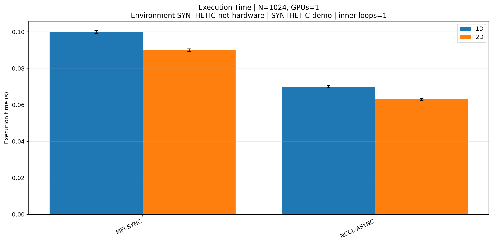
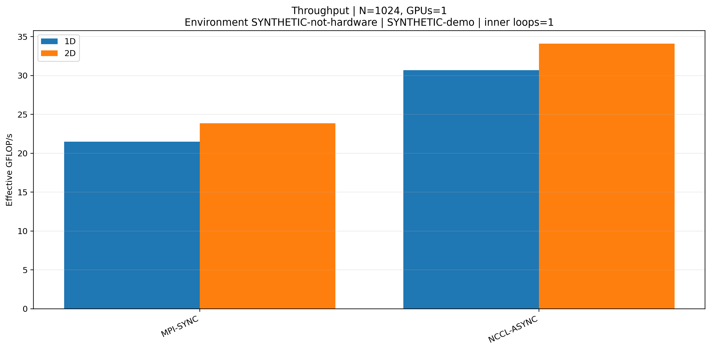
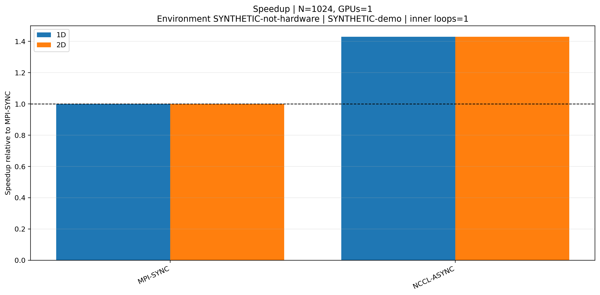
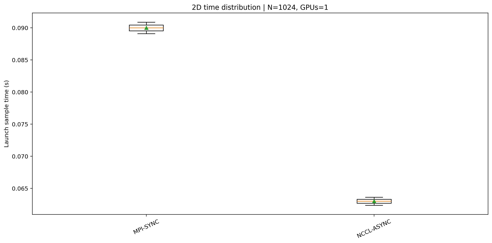
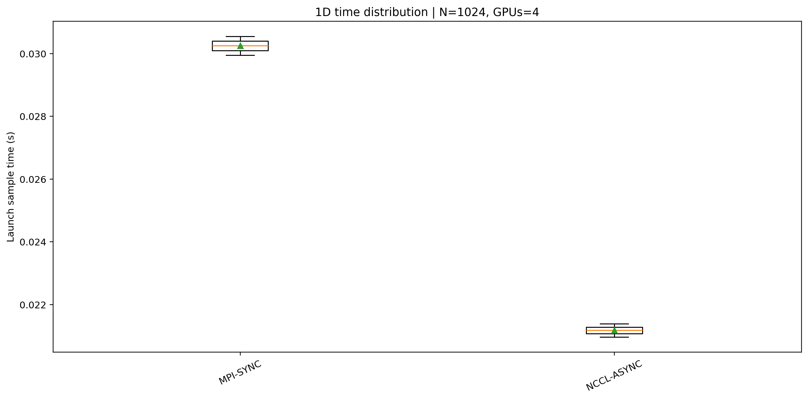
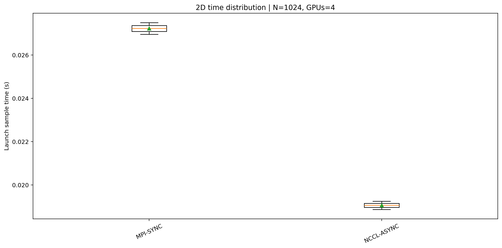
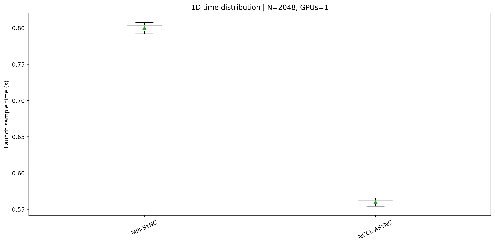
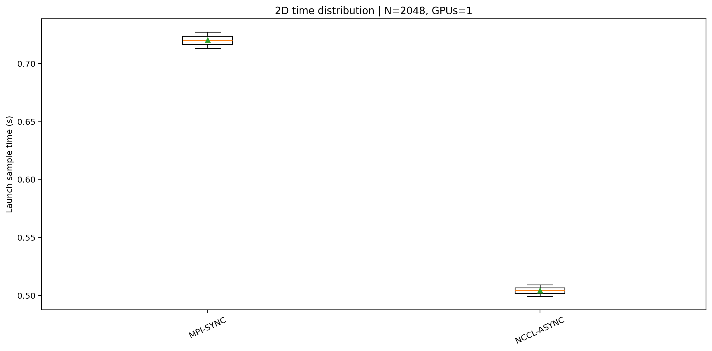
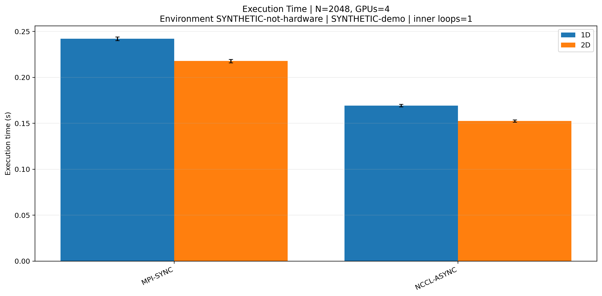
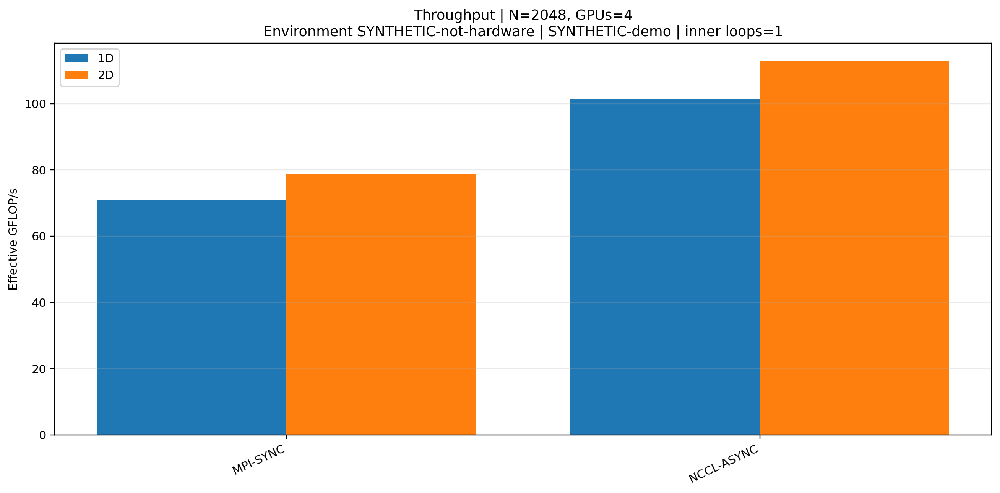
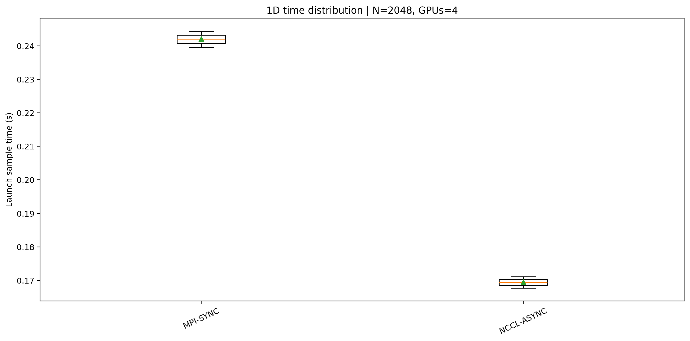
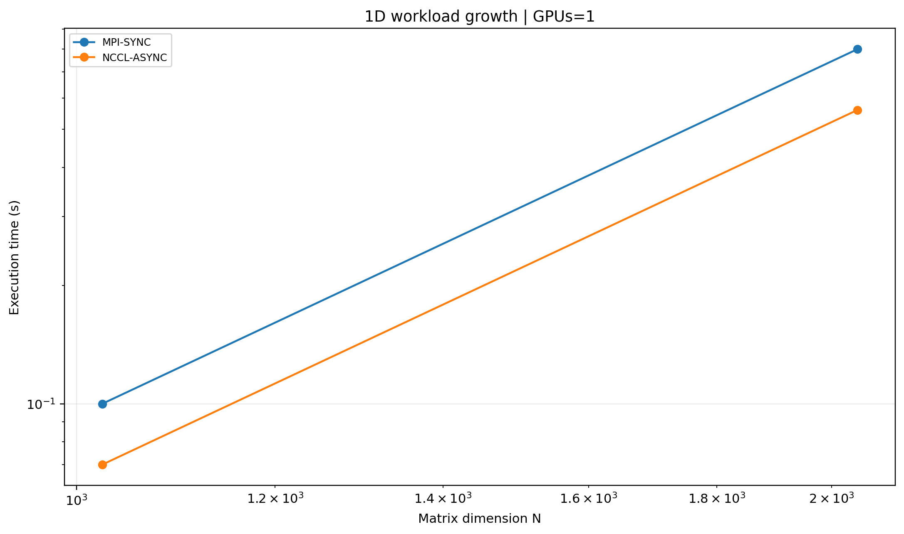
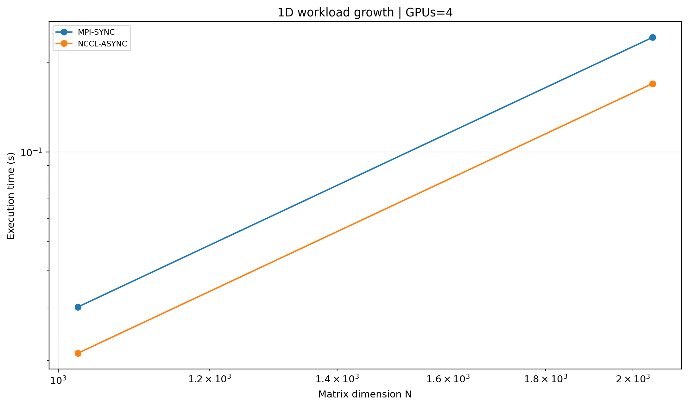
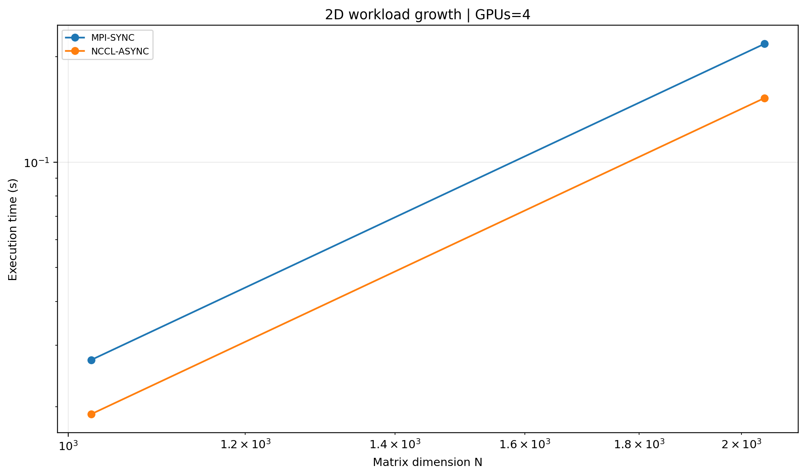
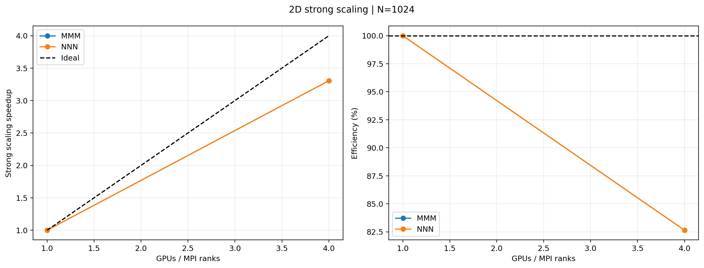
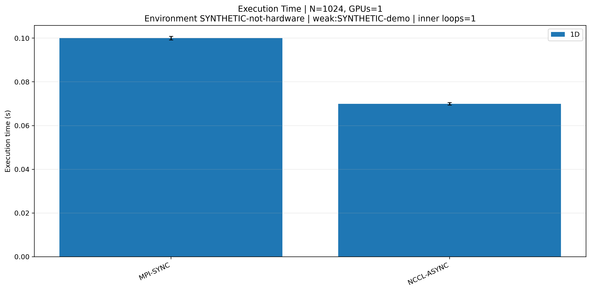
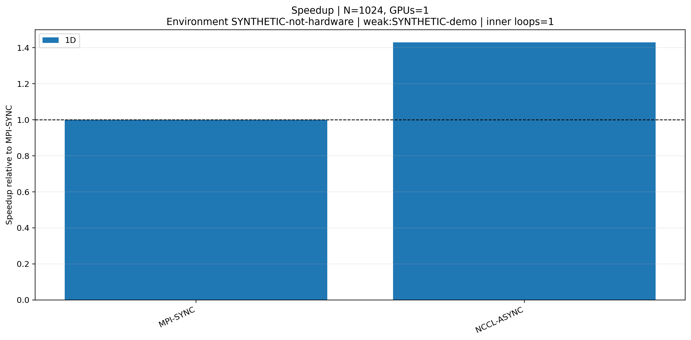
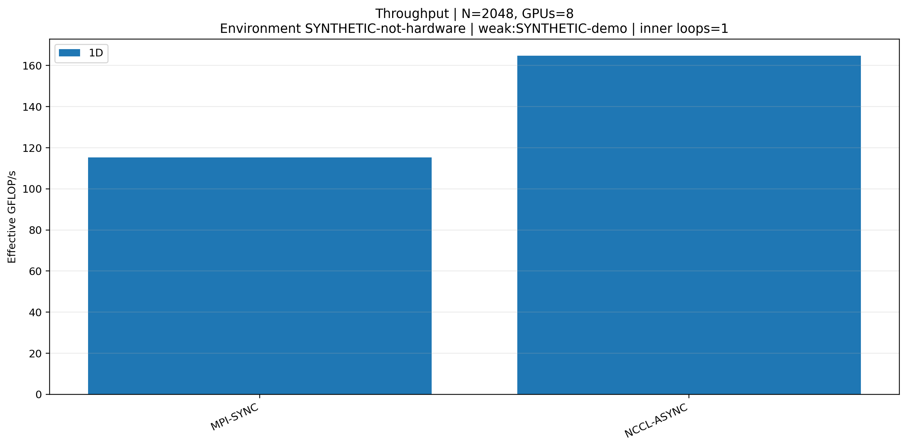
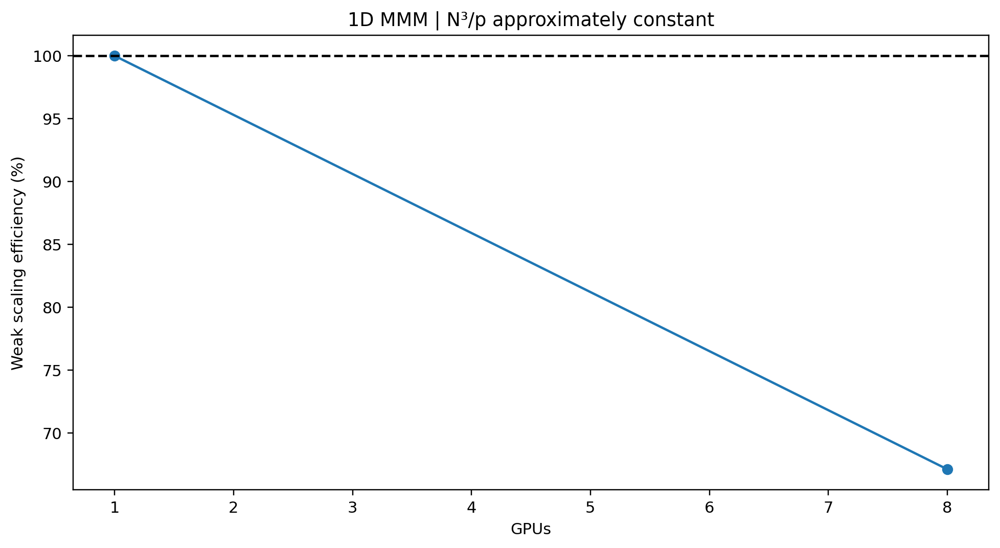
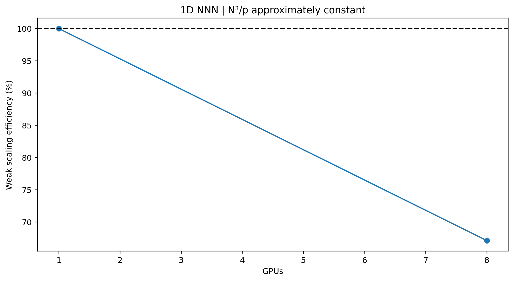